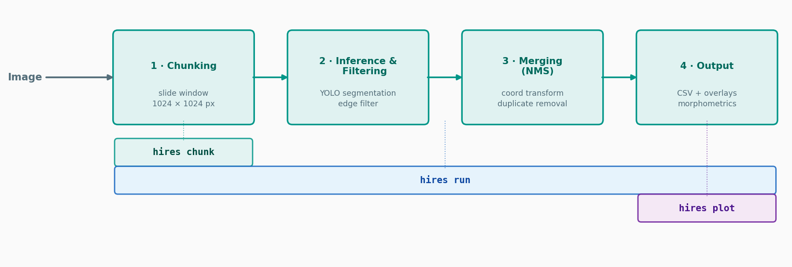

HiReS¶
High-Resolution Segmentation — Automated Morphometric Trait Extraction from Large Plankton Images
What is HiReS?¶
HiReS is an open-source Python library and CLI tool for automated extraction of quantitative morphometric traits from high-resolution biological images. It is designed for ecological workflows where body size, shape, and structural complexity must be measured across large numbers of individuals — a task that is impractical with manual microscopy alone.
The core challenge HiReS addresses is memory: high-resolution scans commonly exceed 10,000 × 10,000 pixels, which is too large for a single neural-network forward pass on standard hardware. HiReS solves this by partitioning images into overlapping chunks, running YOLO-based instance segmentation on each chunk, and reconstructing polygon annotations in full-image space with duplicate removal and edge filtering.
The resulting per-individual polygon outlines are converted into a suite of geometric descriptors — area, perimeter, body dimensions, circularity, convexity, and solidity — that are directly relevant to functional trait-based analyses in plankton ecology.
Why automated trait extraction?¶
Functional trait-based approaches (FTBAs) link measurable phenotypic properties to ecological performance and demographic processes. In planktonic systems, morphometric traits are especially informative:
- Body size governs metabolic scaling and energy transfer efficiency
- Shape complexity influences feeding performance, predator avoidance, and sinking rates
Traditional manual microscopy measures only a small subset of individuals per sample, which limits statistical power and introduces observer-dependent variation. Modern imaging platforms such as flatbed scanners, FlowCAM, and ZooScan can digitize entire samples in a single scan — but the gap between image acquisition and quantitative trait extraction has remained wide.
HiReS closes that gap by producing structured, reproducible morphometric datasets from full-resolution images on standard laptop hardware (no GPU required).
Pipeline overview¶
HiReS exposes three CLI commands, each covering a different subset of the four pipeline stages:

| Stage | What happens |
|---|---|
| 1 · Chunking | Full image split into overlapping 1024 × 1024 px tiles |
| 2 · Inference & Filter | YOLO segmentation per tile; truncated boundary polygons removed |
| 3 · Merging (NMS) | Tile coordinates unified to full-image space; duplicates removed via IoU |
| 4 · Output | Morphometric descriptors computed; CSV, annotations, and overlays written |
See Pipeline for the coordinate transformations, edge filter logic, and NMS algorithm used in each stage. See Morphometric Descriptors for the mathematical definitions of all computed traits.
Key features¶
- Overlapping tile chunking for arbitrarily large images (no GPU required)
- Class-agnostic: works with any YOLO segmentation model
- Geometry-based edge filtering removes boundary artefacts
- Polygon-level NMS with spatial indexing (STRtree) for scalable deduplication
- A suite of morphometric descriptors per object (area, perimeter, circularity, convexity, solidity, bounding-box and OBB dimensions) with optional physical unit conversion (µm, mm, …)
- Three CLI commands:
hires run,hires chunk,hires plot - Full Python API for programmatic access and downstream analysis
The documentation is organised into four parts.
Getting Started¶
| Page | Description |
|---|---|
| Installation | Install from PyPI or source |
| Quickstart | Run your first segmentation in minutes |
User Guide¶
| Page | Description |
|---|---|
| Command-Line Interface | All CLI commands and flags |
| Python API | Using HiReS programmatically |
How It Works¶
| Page | Description |
|---|---|
| Pipeline | How the four pipeline stages work |
| Morphometric Descriptors | Definitions and formulas for all computed traits |
Reference¶
| Page | Description |
|---|---|
| Configuration | All Settings parameters and defaults |
| Output Files | Output files and CSV column descriptions |
Python Library¶
| Page | Description |
|---|---|
| Data Models | Annotation, Collection, Album, and class remapping |
| Evaluation | Matching predictions to ground truth, metrics, and trait analysis |
Citation¶
If you use HiReS in your research, please cite:
Mavrianos S., Teurlincx S., Declerck S.A.J., Otte K.A. (2025). HiReS: A Method for Automated Morphometric Trait Extraction from High-Resolution Plankton Images.